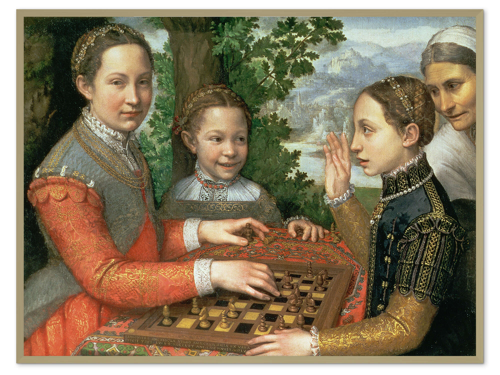
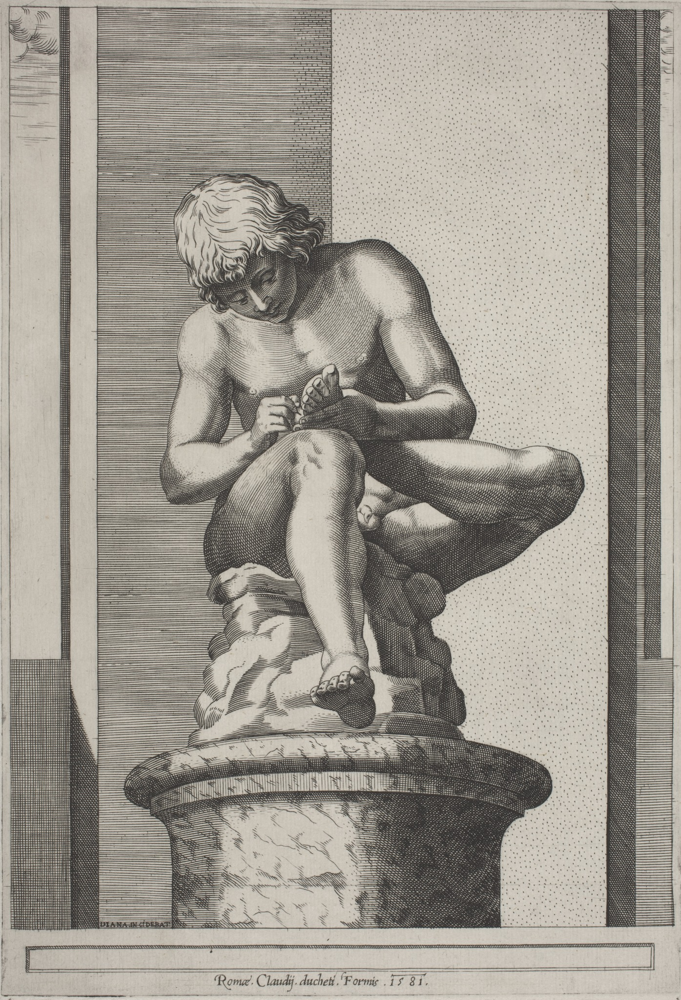
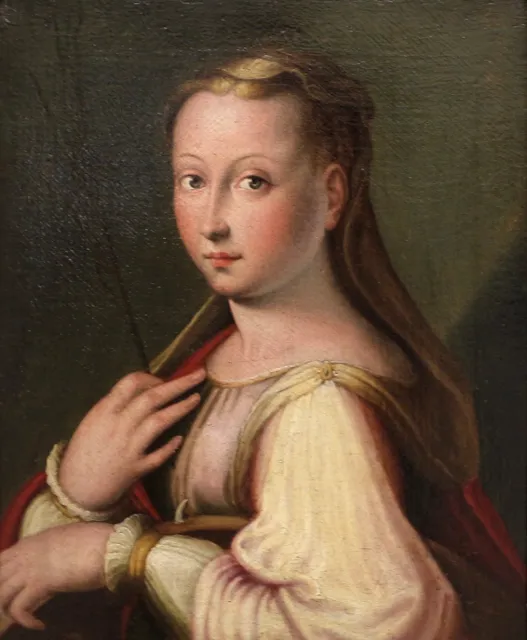
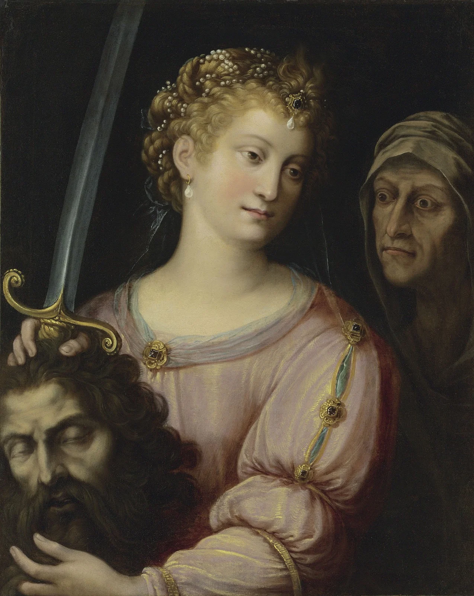
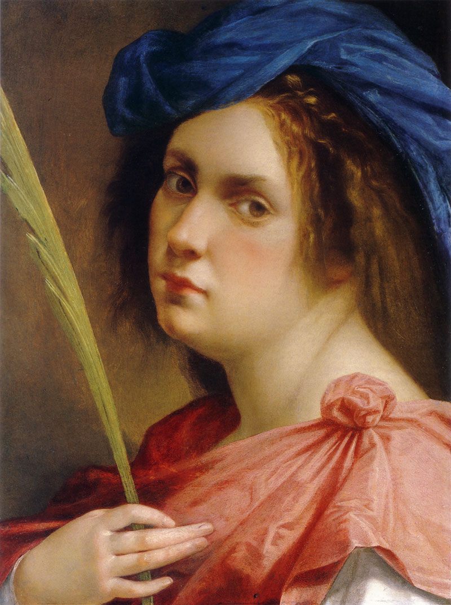

Le artiste
Indice completo delle 81 artiste.

1456–1491
Antonia Uccello
Pittrice fiorentina, figlia di Paolo Uccello, tra le rare artiste documentate del Quattrocento.
Apri la scheda
1482–1548
Eufrasia Burlamacchi
Miniatrice e monaca domenicana, nota per manoscritti miniati religiosi.
Apri la scheda
1490–1530
Properzia de Rossi
Scultrice bolognese del Rinascimento, celebre per intagli e rilievi.
Apri la scheda
1524–1588
Plautilla Nelli
Religiosa e pittrice, prima pittrice fiorentina di cui si conservino opere.
Apri la scheda
1532–1625
Sofonisba Anguissola
Pittrice del tardo Rinascimento, tra le prime donne a raggiungere fama europea come ritrattista.
Apri la scheda
1547–1612
Diana Mantovana
Incisora manierista italiana, tra le prime donne conosciute nella storia della stampa.
Apri la scheda
1552–1614
Lavinia Fontana
Pittrice manierista, tra le prime donne a esercitare professionalmente la pittura.
Apri la scheda
1552–1638
Barbara Longhi
Pittrice manierista ravennate, specializzata in piccole tele religiose e ritratti.
Apri la scheda
1578–1630
Fede Galizia
Pittrice milanese, pioniera della natura morta italiana e raffinata ritrattista.
Apri la scheda
1593–1653
Artemisia Gentileschi
Pittrice caravaggesca, tra le massime protagoniste del Barocco italiano.
Apri la scheda1594–1657
Clara Peeters
Pittrice fiamminga tra le maggiori specialiste della natura morta.
Apri la scheda
1600–1670
Giovanna Garzoni
Pittrice barocca famosa per miniature, nature morte e botanica.
Apri la scheda
1616–1705
Plautilla Bricci
Pittrice e architetta romana del Seicento, figura eccezionale per la sua epoca.
Apri la scheda1633–1699
Mary Beale
Ritrattista inglese, tra le prime artiste professioniste in Inghilterra.
Apri la scheda1638–1665
Elisabetta Sirani
Pittrice bolognese barocca, fondò una scuola frequentata anche da donne.
Apri la scheda
1687–1738
Luisa Maria Vitelli
Pittrice fiorentina di soggetti naturalistici e floreali, attiva nel Settecento.
Apri la scheda1741–1807
Angelica Kauffmann
Pittrice neoclassica di fama europea, tra i fondatori della Royal Academy.
Apri la scheda
1749–1803
Adélaïde Labille-Guiard
Ritrattista francese del Settecento e sostenitrice della formazione artistica femminile.
Apri la scheda

1768–1826
Marie-Guillemine Benoist
Pittrice neoclassica francese, nota per ritratti intensi e moderni.
Apri la scheda
1818–1911
Fulvia Bisi
Pittrice italiana dell’Ottocento, apprezzata per vedute e paesaggi.
Apri la scheda
1825–1909
Hélène Bertaux
Scultrice francese impegnata anche nell’accesso delle donne alle accademie.
Apri la scheda
1841–1895
Berthe Morisot
Tra le fondatrici dell’Impressionismo, con pittura luminosa e intima.
Apri la scheda


1855–1927
Marianne Stokes
Pittrice austro-britannica tra realismo, simbolismo e temi medievali.
Apri la scheda


1864–1933
Margaret MacDonald
Artista e designer del Glasgow Style, vicina all’Art Nouveau.
Apri la scheda
1865–1938
Suzanne Valadon
Pittrice francese post-impressionista, già modella degli artisti di Montmartre.
Apri la scheda

1872–1938
Alice Bailly
Pittrice svizzera d’avanguardia, tra cubismo e sperimentazione tessile.
Apri la scheda1873–1921
Frances MacDonald
Artista scozzese del Glasgow Style, legata a simbolismo e design.
Apri la scheda
1881–1962
Natalia Goncharova
Artista russa d’avanguardia tra cubo-futurismo e scenografia.
Apri la scheda


1893–1983
Marianne Brandt
Designer Bauhaus, celebre per oggetti in metallo e design funzionale.
Apri la scheda

1897–1983
Gunta Stölzl
Designer tessile del Bauhaus, innovatrice nella tessitura moderna.
Apri la scheda
1898–1980
Tamara de Lempicka
Pittrice Art Déco famosa per ritratti eleganti e geometrici.
Apri la scheda

1899–1990
Margarete Heymann
Ceramista e designer legata al Bauhaus e alla ceramica moderna.
Apri la scheda

1903–2000
Gertrud Arndt
Fotografa e designer Bauhaus, nota per autoritratti sperimentali.
Apri la scheda
1908–1984
Lee Krasner
Pittrice dell’espressionismo astratto, protagonista della scuola di New York.
Apri la scheda

1913–1985
Meret Oppenheim
Artista surrealista svizzera famosa per oggetti poetici e stranianti.
Apri la scheda1917–2011
Leonora Carrington
Pittrice e scrittrice surrealista dal linguaggio visionario.
Apri la scheda
1929
Yayoi Kusama
Artista giapponese contemporanea famosa per pois e installazioni immersive.
Apri la scheda

1930–2002
Niki de Saint Phalle
Artista franco-americana nota per le coloratissime Nanas.
Apri la scheda


1944–2024
Rebecca Horn
Artista tedesca di installazioni, macchine poetiche e performance.
Apri la scheda
1954
Cindy Sherman
Fotografa e artista concettuale, celebre per identità messe in scena.
Apri la scheda1958–1981
Francesca Woodman
Fotografa americana nota per immagini intime e sperimentali.
Apri la scheda